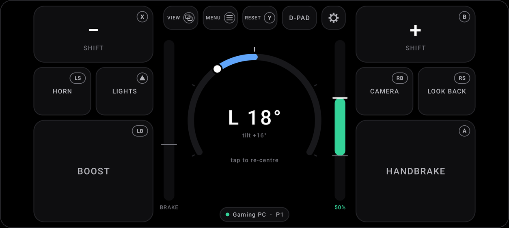
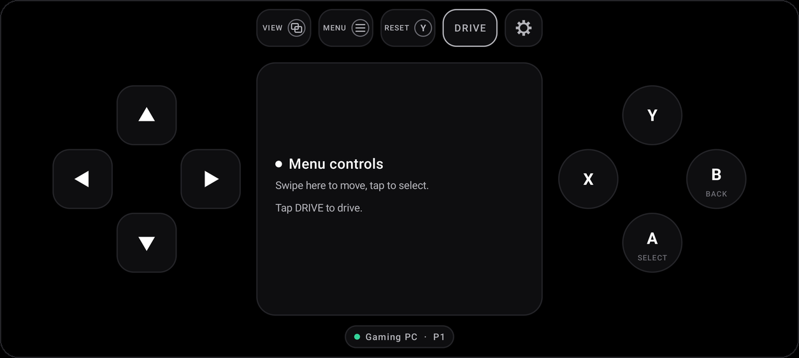

Your phone is the racing wheel.
Turn it to steer, tilt it for gas and brake. Your PC sees an Xbox controller, so it works in any racing game that takes one. Up to four phones, for split-screen with friends.
Android 13 or newer, and a Windows PC on the same Wi-Fi.

How it works
Two minutes, once. After that, open Wheel and drive.
- Run Wheel for PCIt installs itself, sets up the controller driver, and waits by the clock.
- Scan the codePoint your phone's camera at the code in its window. Wheel opens and connects.
- Hold it like a wheelTap the dial in your driving position, then start a race.
What you get
Motion for everything continuous. Buttons for everything else.
Turning the phone steers; tilting it is gas or brake. Lock, deadzones, curve and smoothing are all yours to tune, with a live view of exactly what the game gets.
Handbrake, boost, paddles (or the volume keys), horn, lights, camera, look back. Each shows the Xbox button it presses, so "press A" is easy to find.
A D-pad and A, B, X, Y for the game's menus. Swipe the middle, tap MENU, or just lay the phone flat.
Kerbs, slides and crashes come through the phone's motor, lifted so the faint ones can be felt.
Up to four phones, each its own controller. One button makes anyone Player 1, for games that only listen to Player 1.
Fold the phone to pause. Half-fold it into a cockpit: the dashboard on top, the buttons under your thumbs.

Questions
Any PC game with Xbox controller support. It's been tested with Assetto Corsa and slowroads.io, and its buttons start out the way Forza Horizon expects. For Assetto Corsa, set the input to X360.
Wheel for PC is new, so Windows hasn't seen many people run it yet. Click More info, then Run anyway. It installs only for you, needs no admin rights itself, and asks before installing the controller driver.
No. The phone talks only to your PC, over your own Wi-Fi. No accounts, no ads, no analytics. See the privacy policy.
Only phones you allow. A new phone waits until you click Allow on the PC, unless it scanned the code on your screen.
It's the next best thing you already own. There's no force feedback through the steering, but there's rumble, and the phone sends its controls 125 times a second.